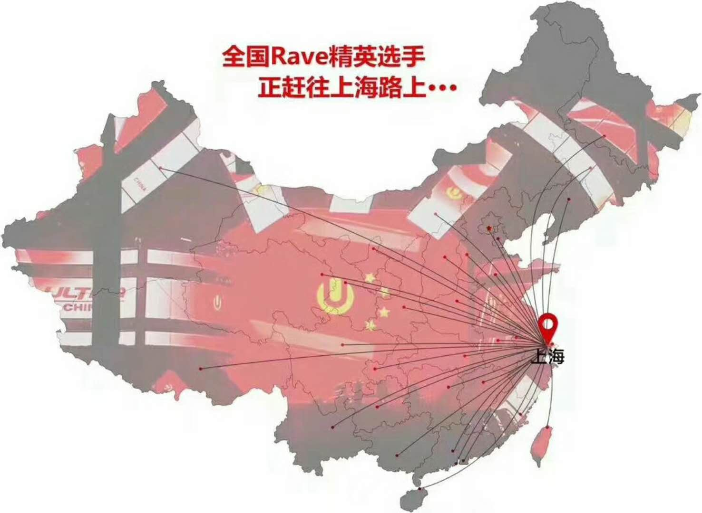
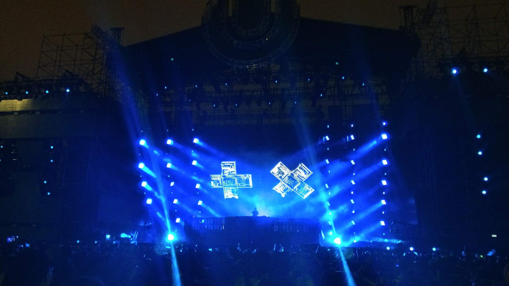

再见2017，你好2018
Contents
不知不觉中，2017年已经走到尾声，2018年马上要到来了，回想这一年，无论是工作还是生活都发生了很多变化，如果用一个字来总结2017，那么这个字就是“变”,这些事情让我有了更多的想法，这也让我对2018年有了期待。
工作，技术
2017年，自己所在的项目组发生了很大的变化，业务有所调整，所以自己的工作内容也发生了重大的变化。
回看这一年的周报，可以很明显的看到，在2017年上半年，工作内容集中在海外业务，但是到了下半年，工作内容已经开始逐步转向平台业务系统，开始接触很多的好玩儿的技术，像react，react native，vue等等这些框架开始大量使用。业务量的增长，人员的增多，让我的思想开始发生转变。
HOW ➡️ WHY
之前，由于业务并不是那么多样化，业务量也不是那么多，所以使用的技术相对单一，自己之前虽然也有学一些新的东西，但是这些东西也仅仅停留在学习如何使用上面，而对于为什么要这么用，可能并不会想太多。
原理的理解让我对那些经常使用的技术有了更深入的理解，如果不理解为什么这么写而仅仅只是知道需要这么写就很容易忘记，而且每次写的时候还需要看看官方demo，这可以说是自己的亲身体会吧。
之前在做完一个react项目再做另一个的时候，我发现我还是需要看官方demo才能记得，那个connect怎么写，小括号，花括号怎么放，这让我很无语，这让我开始意识到我该学习一下为什么这里要这么写，所以自己该抽时间学习一下redux的原理，源码，在学习后，感觉写起来要顺利许多，这一点让我感触很深。
还有一点，就是在使用那些新技术的时候，比如像vue，react的时候，最好不要一上来就全家桶，直接redux什么的一起上，最好还是有个渐进的过程，否则对于为什么需要这些库理解可能不会太深。之前做第一个项目的时候，交互虽然复杂，但是并没有用redux，这让我们在做项目的时候，遇到了很多回调，很深的传递，之后在项目中加入redux之后，才对为什么会有这些数据管理库有了更加深入的理解，我觉得这一点也是非常宝贵的，
所以，我觉得今年关于技术思想上变化最大的，也是让我感触最深的是：
- 要知其然，也要知其所以然，而不是盲目的学完这个学那个，这样的最终结果就是哪个都不是很精，并没有太大用处。
- 在学习这些技术的同时要理解这些技术解决了开发中的哪些痛点，理解它们出现的原因，记得之前尤大也说过，vue是渐进式的框架，我觉得学习技术也要渐进式的学习，一个一个网上加，而不是搞大而全，这样才能理解更深入。
意识到团队的重要性，开始注重软实力
之前，由于人员相对较少，所以很多时候，可能是怎么方便怎么来，并不会考虑自己写的这些东西别人用的会不会舒服，自己写的代码别人能不能看懂，但是随着人员的增多，项目的增大，大家合作的越来越多，自己有时候也会负责项目的搭建，自己可能会写一些公共的代码块儿在项目中使用，这些工作的出现让我开始意识到团队合作的重要性，自己弄的东西，如何方便他人的使用，一个项目如何搭建更利于后期维护。
现在的前端发展非常快，各种新技术层出不穷，但是在我们忙着学习新东西的时候，我们是否考虑过自己的代码写的足够健壮，如何写让别人读起来更加舒服，技术在更新，各种框架在变化，但是这些软实力并没有因此而变得不重要，它们依旧是考量一个工程师是否优秀的标准之一。
今年开始，自己开始学着如何让项目的可维护性更高，代码如何写，更加健壮，开始注重修炼内功了，但是这并不是那么简单几天几个月就可以学会的，而是一个长期的过程，年底时候考虑过自己写一份代码规范，相当于一个revew规范吧，如何写代码更加合适，但是由于年底工作的繁忙并没有实现这个，我想这个将会是2018年的要做的头一件事儿了。
关于2017年一年在技术方面让我产生思考，并让我发生转变的的就这两方面了，2018年我将沿着这两方面继续走下去✌️
生活
2017年关于生活上的，2017年也发生了很多事儿，尤其是在后半年的一些事儿让我记忆深刻，甚至引发一些思考。
学习英语
英语对于我这种技术人来说其实一直都很重要，因为经常会遇到阅读国外文章，文档的时候，所以英语好对于我来说是非常重要的，所以从2017年下半年开始，我开始再一次拿起英语，我觉得2018年，这也将是重中之重…
开始对金融投资感兴趣
数字货币比特币在2017年底可以说是占尽了风头，在谷歌搜索排行榜达到第一，为什么会这样的呢？因为在2017年，数字货币像比特币，莱特币，以太坊等等可以说是疯长，比特币一路狂飙，一度达到每个十万人民币，要知道这家伙年初的时候也就几千一个，着就说说，如果你持有几十个比特币，基本上离财富自由就不远了。
记得第一次听说比特币是在上大学时候，那时候虽然对这个东西好奇，但是因为是学生，也没什么钱，所以并没有投资这些，之后就渐渐的淡忘了，直到今年年底，新闻开始大量报道比特币疯狂上涨以及各种稀奇古怪的丢失比特币的新闻，比如国外有一哥们儿扔了个硬盘，里面有几千个比特币，找不回来了，估计这哥们儿会后悔一辈子吧，哈哈…
还有就是看到同学开始学着理财，自己也开始尝试，但是只是买了些基金，而且因为不是很懂这些，所以也是在乱买，年底的时候感觉不能这么胡来，得系统学习下这些东西到底是怎么弄的。
这两件事儿让我开始对金融投资产生了兴趣，我觉得2018年我将要认真学习关于金融的东西
参与线下活动
2017年这一年，说实话，参与的活动变得少了，无论是技术还是非技术，相比于2016年少了很多，也许是因为2017年人工智能火爆，而前端相对于2016年热度降低不少，所以很多技术活动都是人工智能方面的，而非技术方面的其他活动，不知道为什么也参加少，可能是没找到好玩儿一点儿的，所以也少了。
2018年还是要多参加活动，这样才能认识更多有意思的人，扩展自己的想法，而不是局限在技术这一个圈子内。
去上海参加Ultra China——人生中第一次参加音乐活动
如果说2016年对于我来说是民谣的一年，那么2017年就是我的电音元年了。2016年年底，开始有意识的听一些电音，开始知道有电音这种音乐风格。
之前虽然也喜欢过各种各样的歌手，但是对于去现场，我并没有多大想法，感觉去不去都一样，没什么意思，直到遇到电音。去参加Ultra，人生中第一次参加音乐节。
2017年初，听说世界顶级电音节之一——Ultra Music Festival要来中国上海了，非常的激动，毕竟自己虽然喜欢电音，但是因为这些音乐节都在国外举行，所以只能看看视频了，并没有去现场看到，这次Ultra来中国，举办首届Ultra China，可以说是必去无疑，虽然是一个人，但是还是决定去一趟。在经过抢票，安排行程住宿后，就盼望着9月8日了。
经过忙碌的工作，耐心的等待，2017年9月8日终于到来，这两天，全国的顶级raver纷纷乘坐各种交通工具来到上海，参加属于他们的顶级电音节。

我记得8号我坐动车去上海，动车给我晚点了，我也是醉了。最终在晚点90分钟后，成功在凌晨抵达上海，也是够艰难的😂。
两天的狂欢即将开始…


两天的狂欢可以说是让人精疲力尽，各种腰酸腿疼，但是并不后悔，因为之前对于音乐，从未有过如此喜欢的感觉。虽然难说再见，各种不舍，但是最终还是在9月11日，踏上回京的高铁…
再见Ultra，2018年上海，不见不散…
前几天听说2018年，EDC要来中国上海了，又一大顶级电音节登陆上海，我想说，tomorrowland来中国还远吗？哈哈，看来明年至少去一趟上海了✌️。
附：
Armin Van Buuren tomorrowland 2017 live
Armin Van Buuren Year Mix 2017
Martin Garrix tomorrowland 2017 live
结语
此刻，距离2018年还有不到一个小时。今天，对这一年的小确幸送上微笑，也向这一年的遗憾送上拥抱；对这一年坚持过的自己说声“谢谢”，也向这一年放弃过的自己说声“在努力”；为这一年世界的美好点赞，也向这一年流过的泪告别。
再见2017，你好2018…